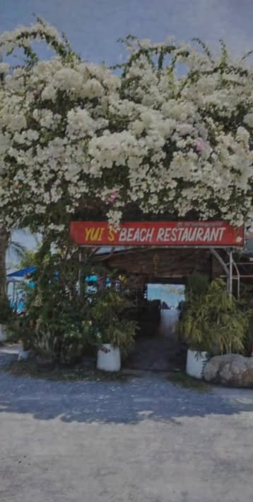
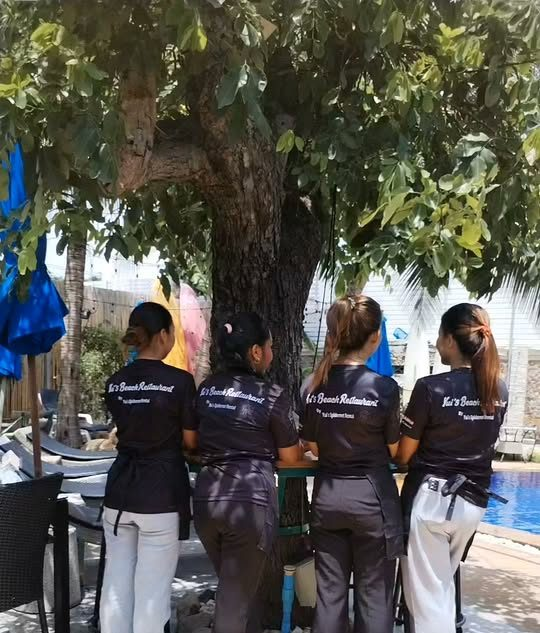
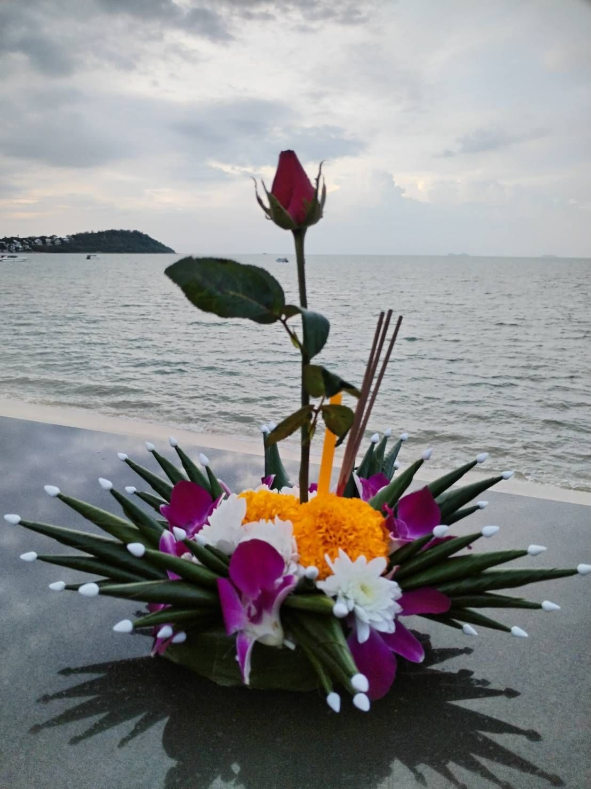
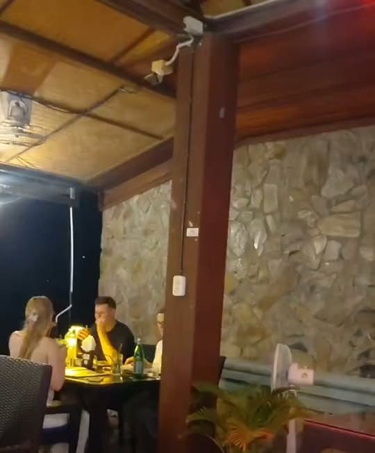
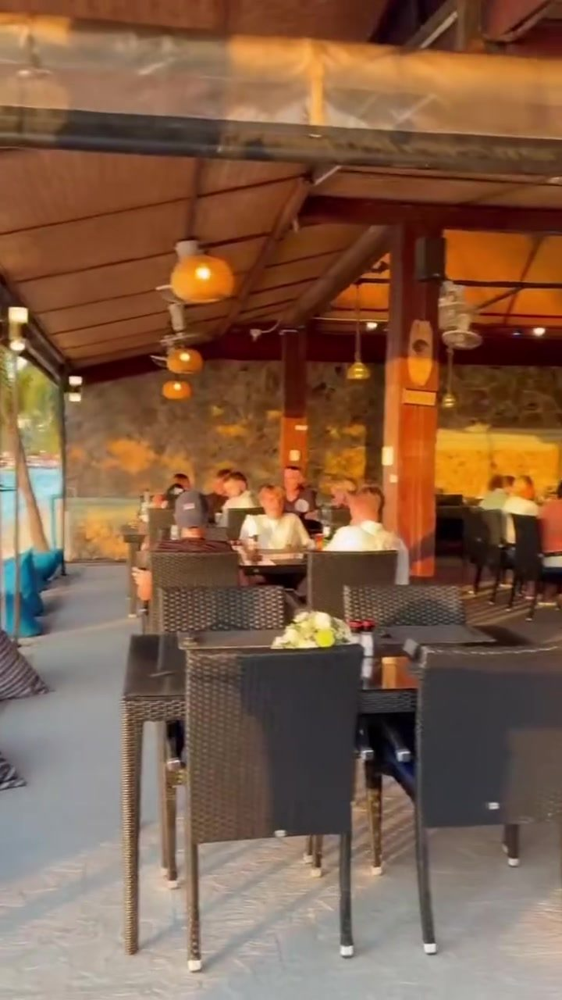

★★★★★
“We were a large group of 3 families and had our favorite dinner on Koh Samui! … the pool was great! Staff was friendly and patient, and drinks were delicious. Highly recommended.”
About · เกี่ยวกับเรา
ร้านอาหารริมทะเล บรรยากาศเหมือนอยู่บ้าน


Our story
Walk under the flowers by the gate and the noise of the island fades away. In front of you, the ocean stretches to the horizon.
At Yui’s we keep things simple: authentic Thai cooking, Western dishes for those who want them, a pool to relax in and a beach right on the doorstep. Guests tell us it feels like visiting family, and that is exactly how we like it.
อาหารไทยรสชาติต้นตำรับ อาหารฝรั่ง สระว่ายน้ำ และชายหาดอยู่ตรงหน้า
“Place is very comfy and makes you feel like you visiting your family.”
Google review
What makes Yui’s different
Ocean views from almost every table, and sunsets over the islands.
Diners can use the pool and the beach, so kids are kept busy.
Warm, patient staff, praised again and again in guest reviews.
From Loy Krathong on the sand to New Year by the sea.


Reviews
“We were a large group of 3 families and had our favorite dinner on Koh Samui! … the pool was great! Staff was friendly and patient, and drinks were delicious. Highly recommended.”
“You can enjoy a beautiful and very chill beachside atmosphere here. They serve authentic Thai food with delicious and rich flavors, as well as a variety of Western dishes… It’s a restaurant you shouldn’t miss when visiting Koh Samui.”
“Wonderful spot right on the beach! The wonderful staff (specifically Tu) took the time to read my Thai gluten free card and walked me through the entire menu… The coconut shakes were also amazing!”
“It’s truly a wonderful little spot and an amazing restaurant with delicious food. Every time we’re on Koh Samui, our very first stop has to be Yui’s. We absolutely love it!”
“ขอแนะนำร้านอาหารที่ขึ้นชื่ออีกร้านหนึ่งของเกาะสมุยค่ะ ไม่ว่าจะเป็นรสชาติอาหารที่ถูกปาก ความสะอาด การบริการที่เป็นมิตรของพนักงาน และมีอาหารให้เลือกทานหลากหลายชนิด…”
“best pizza and view on bangrak. thank you for keeping your hospitality level so high”
Quotes are from public Google reviews and a guest quote shared on Yui’s Facebook page. Some are shortened (…).

Tonight’s sunset is free
จองโต๊ะริมทะเล โทร 088 301 9153